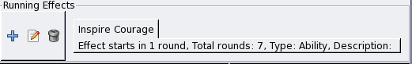
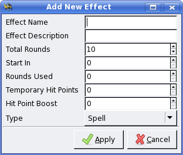
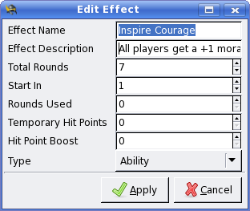

Effects Tracking
When a combatant either creates an effect or is subject to an effect that
lasts more than one round, Turn Watcher can track that effect for you.
In fact, many effects on mulitple combatants may be tracked similarly.
To add an effect, make sure the subject of the effect is highlighted in the
main window, then click the "plus" button located on the effects panel:

A dialog will appear allowing you to enter the details of the effect.

Tip: Use the shortcut keys <CTRL><SHIFT>A to quickly add a new effect.
Enter an Effect Name, which will appear in the effect panel on the
main window.
Effect Description also appears in the effect panel when the current
effect is chosen. You may put extra details into the field that will help
you to remember what the effect does. For example, "adds a +1 morale bonus
to all saves".
Total Rounds allows you to specify the number of
rounds the effect lasts, including the current round.
Start In allows
you to put a delay before the effect kicks in.
Rounds Used you may
leave at "0"&emdash;this gets updated by Turn Watcher automatically
each round that the effect is in running.

The Temporary Hit Points field allows you to enter a number of temporary hit points which will
be deducted first when the combatant takes damage. As soon as the effect stops, the hit points are
removed automatically. Hit Point Boost will boost the combatants maximum hit points for
the duration of the effect.
Tip:You may add and delete multiple effects by highlighting combatants in the main window.
Use the <CTRL><SHIFT>A and <CTRL><SHIFT>X keys respectively for quick access.
|